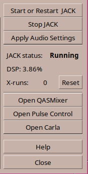

Generic controls
There is a set of controls down the right side that are always visible.
The top three buttons control JACK, then there is a JACK status area and finally,
some buttons to start level controls or Carla for making JACK connections.

-
Start or Restart JACK - Saves any changes and starts or restarts JACK with new values.
NOTE:
If JACK is running when the system is rebooted, JACK will be started automatically on next
login.
-
Stop JACK - Stops JACK and restarts pulse with system default settings
-
Apply Audio Settings = Saves settings and tells background process (Autojack) to use those settings.
JACK will be restarted only if JACK master settings are changed.
The Jack status Area shows JACK Status (running or stopped), The amount of DSP being used
and the number of Xruns since last GUI start or last reset.
-
Open QASMixer - Opens QASMixer to control the ALSA levels and settings for the JACK master device.
-
Open Pulse Control - Opens pavucontrol to allow basic routing and level setting in pulse
-
Open Carla - Opens Carla who's patchbay can be used to make jack connections
-
Help - a small explanation of why a proper RT setting is helpful
-
Close - Closes Studio Controls. Will suggest applying the setting if any have been made since startup
 Previous: System Teaks --- Next: User Scripts
Previous: System Teaks --- Next: User Scripts

Studio Controls Home